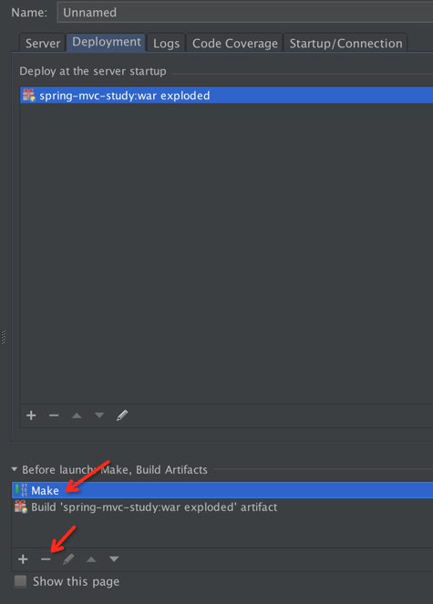
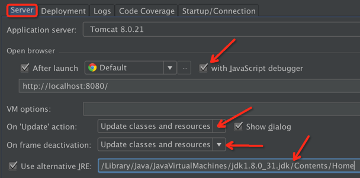
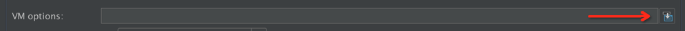

IntelliJ IDEA 的 Java 热部署插件 JRebel 安装及使用
JRebel 介绍
在 Java Web 开发中， 一般更新了 Java 文件后要手动重启 Tomcat 服务器， 才能生效， 浪费不少生命啊， 自从有了 JRebel 这神器的出现， 不论是更新 class 类还是更新 Spring 配置文件都能做到立马生效，大大提高开发效率。
JRebel 安装
JRebel 的安装方法有两种， 一种是直接在 Tomcat 启动参数上面加上 JRebel 的参数， 另外一种是以插件的形式装到 IntelliJ IDEA 上， 比较推荐后者。
第一种安装方法：在 Tomcat 启动参数上加参数
首先先介绍第一种安装方法， 先在硬盘某个位置把 JRebel 解压出来
然后配置 IntelliJ IDEA 的 Tomcat

点 + 号选择 Tomcat Server -> Local

默认显示如图

几个关键的地方需要注意的， 就是首先要选择 Deployment 这个选项卡

选择自己的项目， 建议选择带 exploded， 这个相当于改 Tomcat 的 CATALINA_HOME， 效率比较高

选择好后， 删掉默认的Make， 提高效率

接下来返回 Server 选项卡， 会发现多了一项 On frame deactivation， 如果你刚才没有配置 Deployment 选项卡的话的这项是不会出现的
按如图所示的来配置， 特别需要注意的是 On 'Update' action 和On frame deactivation 这两项目一定要选择 Update classes and resources， 否则类修改热部署不生效， 或者第三方模版框架例如 Freemarker 热部署不生效

接下来就是很关键的需要引入 JRebel 的地方了， 在 VM options 的最右边有个箭头， 点进去

Windows 输入:
-noverify
-agentpath:D:/dev_env/jrebel/jrebel_running/lib/jrebel64.dll
Linux 用这个：
-agentpath:/dev_env/jrebel/jrebel_running/lib/libjrebel64.so

Mac OS 用这个：
-agentpath:/dev_env/jrebel/jrebel_running/lib/libjrebel64.dylib

配置完成， 直接启动 Tomcat 即可， 不过此方法麻烦， 每次新建项目都要从新配置
第二种安装方法：使用 IntelliJ IDEA 插件
接下来介绍使用 IntelliJ IDEA 插件的方式启动 JRebel
首先是安装 JRebel 的插件， 安装方法和其他插件安装方法一样， 不过这里不采用在线安装， 直接选择本地安装， 直接选择插件安装即可

安装好后在设置里面会多出一项 JRebel 的配置
查看一下插件是否有效

绿色的 VALID 表示是有效的
在原来运行项目的按钮边上会多出两个绿色的按钮， 如图， 前面那个是 Run， 后面那个是 Debug
自定义容器启动
配置 Tomcat 的方法和直接上面说的直接调用配置方法一样， 同样需要注意的是 On 'Update' action 和 On frame deactivation 这两项目一定要选择 Update classes and resources， 唯一不同的是 VM options 这项不需要填， 放空就好
接下来直接启动项目， 一般选择后面那个 Debug 按钮

看到 Log 有 JRebel 输出的版本信息， 没有报错就是表示成功执行了， 随便改一个类试试吧
Maven 或 Gradle 启动
打开 JRebel Panel 窗口，然后勾选项目或模块即可，这时插件会在 src/main/resources 目录下生成 rebel.xml 文件，这里面指定了插件检测热部署文件夹的路径

然后在 Maven projects 或 Gradle projects 窗口，右键 Task 使用 JRebel 启动
启动之后更新资源重新编译（Ctrl + Shift + F9）即可
JRebel 官网有免费激活服务，到官网注册领取，请支持正版：
- 官网注册，注册完就会显示一串密钥了：https://zeroturnaround.com/software/jrebel/trial/